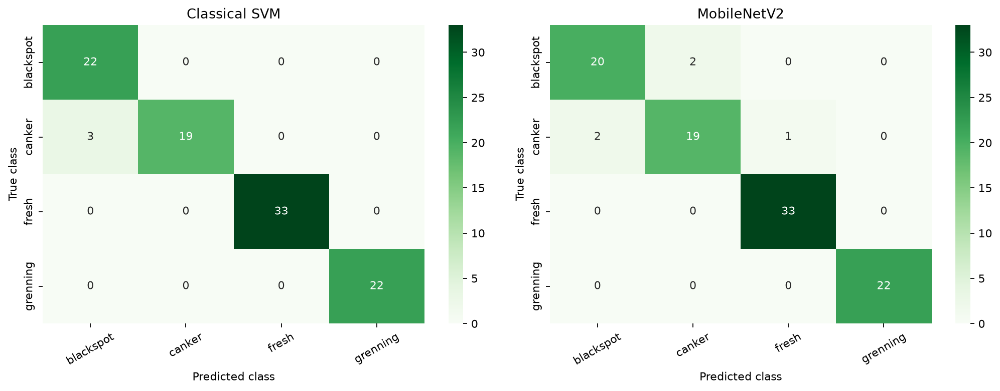

Classical machine learning
HSV and LAB color histograms plus a Local Binary Pattern texture histogram are scaled and classified with a class-weighted RBF-kernel SVM.
Computer vision · Model comparison
Comparing hand-designed color and texture features with transfer learning to classify orange images.
This project compares a classical Support Vector Machine (SVM) with a MobileNetV2 deep-learning model. Both are evaluated against the same held-out test images.
Scope note: despite the original folder name, this project classifies orange conditions. It does not classify avocado ripeness. This page presents saved project materials; it does not host a live image-prediction service.
The dataset contains 1,090 images. The supplied test split remains separate while a validation set is drawn from the training data.
| Class | Train | Test | Total |
|---|---|---|---|
| blackspot | 184 | 22 | 206 |
| canker | 179 | 22 | 201 |
| fresh | 281 | 33 | 314 |
| grenning | 347 | 22 | 369 |
| Total | 991 | 99 | 1,090 |
HSV and LAB color histograms plus a Local Binary Pattern texture histogram are scaled and classified with a class-weighted RBF-kernel SVM.
ImageNet-pretrained MobileNetV2 uses a newly trained four-class output layer. The feature backbone is frozen, with image augmentation during training.
Both models were tested on the same 99 images. Macro-averaged metrics give each class equal weight.

The test set contains only 22–33 examples per class. In addition, the fresh images have a different format and size profile, which may provide a dataset shortcut. These results are preliminary and do not establish real-world performance.
Collect more balanced examples across cameras, locations, cultivars, and lighting conditions.
Verify labels and evaluate on an independent external dataset before considering real-world use.
Measure end-to-end performance on target hardware and include image decoding and resizing in latency tests.